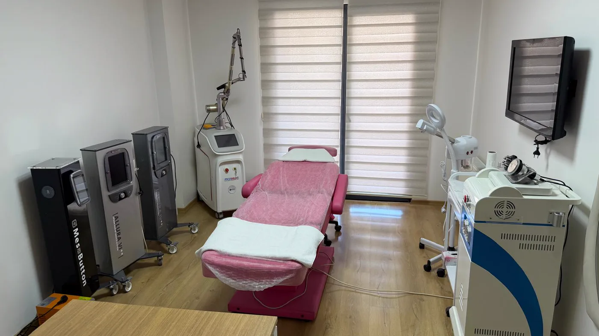
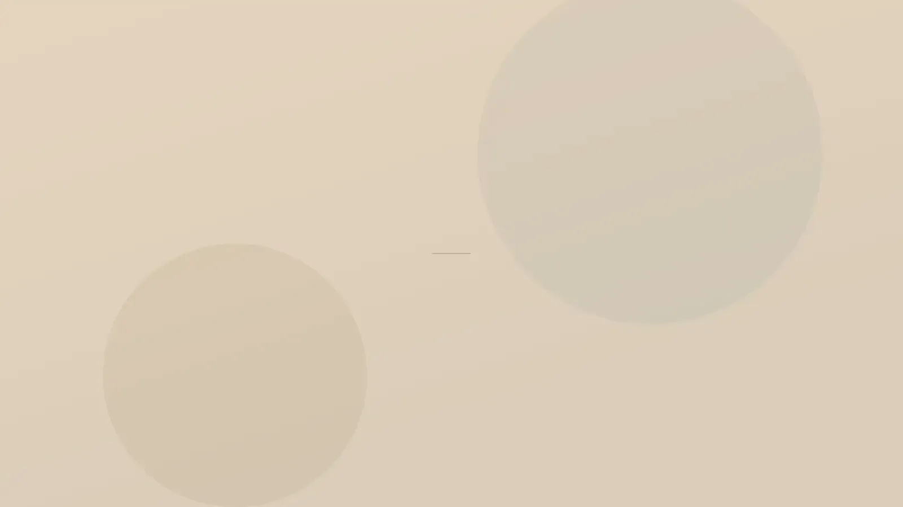

Cihaz ve Lazer · Dövme Silme
Pico lazerle dövme silme: mürekkep seanslar içinde açılır.
Pikosaniye, saniyenin trilyonda biridir; pico lazer enerjisini bu kadar kısa süren atımlarla verir. Hedef, deri içindeki mürekkep taneciklerini ısınmaya fırsat bulmadan ufalamak ve bu kırıntıların vücut tarafından haftalar içinde taşınmasını sağlamaktır. Tam silinme taahhüt edilmez; amaç, görünümün her seansla biraz daha açılmasıdır.

Tanım ve sınırlar
Lazer dövmedeki mürekkebe ne yapar, dövme bütünüyle kaybolur mu?
Dövme iğnesi mürekkebi derinin orta katmanına bırakır. Tanecikler onları yutan savunma hücrelerinin içinde kalır; taşınamayacak kadar iri oldukları için yıllarca yerinden oynamaz. Lazer taneciği taşınabilir boyuta indirir, gerisini vücut yapar. Genel çerçeve için dövme ve kalıcı makyaj sayfasına bakabilirsiniz.
Enerji çok kısa sürede verildiğinde çevre dokuya ısı olarak yayılacak zaman kalmaz; mürekkep taneciği ani bir basınç dalgasıyla kırıntılara ayrılır. Buna fotoakustik etki denir ve amaç çevre derinin daha az ısınmasıdır.
Kırıntıları uzaklaştıran lazer değil, bağışıklık sistemidir; savunma hücreleri parçaları lenf yollarıyla taşır. Bu yüzden açılma seans günü değil, izleyen haftalarda fark edilir.
İki dövme aynı renkte olsa bile biri daha derine, daha yoğun işlenmiş ya da daha yeni olabilir; bu farklar seans sayısını değiştirir. Dolaşım da rol oynar: ayak bileği ve el sırtı gibi kalpten uzak bölgelerde süreç yavaşlar.
Kullanılan cihaz: pikosaniye Nd:YAG lazer (Picodela II).
Dövmeyi bütünüyle silme sözü veren bir işlem değildir. Dizinin sonunda silik bir gölge, çevre deriden açık ya da koyu bir ton veya hafif doku farkı kalabilir; bu olasılık ilk görüşmede konuşulur ve onam formunda yazılıdır.
Deriyi kazımaz, yüzeyi soymaz; mürekkep yerinde ufalanır. Sık aralıkla gelmek de işi hızlandırmaz: vücut önceki seansın kırıntılarını taşımayı bitirmeden verilen yeni enerji açılmaya bir şey katmaz, tersine ton bozulması ve iz riskini büyütür. Aralığı kısaltma isteğini bu yüzden kabul etmiyoruz.
Açılmayacağını öngördüğümüz bir dövme için seans başlatmıyoruz. Bu sınırı neden koyduğumuzu neden bazı işlemleri yapmıyoruz başlığı altında açıkladık.
Renk ve tür
Renk ve dövme türüne göre yanıt nasıl değişir?
Aynı sayıda seanstan sonra iki dövme çok farklı görünebilir. Aşağıdakiler genel eğilimlerdir; sonuçlar kişiden kişiye değişir.
Siyah ve koyu tonlar
Siyah, koyu gri ve lacivert mürekkep lazer ışığını iyi soğurur; yanıtı öngörmesi en kolay gruptur. Yoğun siyah dövmelerde yine de dizi uzun sürebilir.
Kırmızı, turuncu ve pembe
Farklı bir dalga boyu gerekir, yanıt orta düzeydedir. Kırmızı mürekkep, dövmede gecikmiş kaşıntı ve kabarıklığa en sık yol açan renktir; bu öykü lazer öncesinde mutlaka konuşulur.
Yeşil, mavi ve sarı
Nd:YAG dalga boylarıyla uyumu zayıf renklerdir; açılma yavaş ve sınırlı kalabilir, sarı ve beyazda belirgin değişim olmayabilir. Birden çok renk taşıyan bir dövmede siyah kısımlar solarken yeşil kısımlar yerinde kalabilir; dizinin ortasında dövme yamalı görünebilir.
Kalıcı makyaj
Kaş, dudak ve eyeliner uygulamalarındaki ten, kahve ve pembe tonların bir kısmı demir oksit ya da titanyum dioksit içerir; atımla anında griye veya siyaha dönüp açılmayabilir. Bu yüzden ilk atım, kaşın dış ucu gibi göze batmayan bir noktaya yapılır ve sonucu birkaç hafta beklenir. Kaş kıllarının rengi açılabilir; göz kapağı kenarı göz güvenliği için ayrıca değerlendirilir.
Amatör ve profesyonel dövme
Elle ya da ev koşullarında yapılan dövmelerde mürekkep seyrek ve düzensiz derinliktedir; çoğu zaman daha az seansla açılır. Makineyle, yoğun ve katmanlı işlenmiş profesyonel dövmelerde dizi uzar. Yıllar içinde solmuş dövmeler daha hızlı yanıt verebilir.
Kapatma dövmesi
Eski dövmenin üzerine yapılan ikinci dövmede iki mürekkep katmanı üst üste bulunur; seans sayısı artar, açılırken alttaki desen yeniden belirebilir. Yeni bir kapatma düşünülüyorsa eski dövmeyi birkaç seansla soldurmak işi kolaylaştırabilir.
Planlama
Seans sayısını ne belirler, kimlerde beklemek gerekir?
Muayenede renk, derinlik, yoğunluk, dövmenin yaşı, bölgenin dolaşımı ve genel sağlık durumunuz not edilir. İlk aralık kabaca bir tahmindir; dövmenin lazere tepkisini ilk iki seans gösterir, sayı ondan sonra daraltılır.
Seanslar arası süre
Ufalanan mürekkebin taşınması zaman alır; yeni seans, bu taşınma büyük ölçüde tamamlandığında yapılır.
Çubuk boyları yalnız karşılaştırma içindir; size özel plan muayenede kurulur.
- Muayene: renk, derinlik, dövmenin yaşı, alandaki benler
- Görünmeyen küçük bir noktada deneme atımı
- Bilgilendirme ve yazılı onam; kalabilecek gölge açıkça konuşulur
- Koruyucu gözlükle sıralı atımlar; kısa süren beyazlama olağandır
- Soğutma, örtü ve 6–8 hafta sonrasına kontrol
Yakın zamanda bronzlaşan deride ton eski hâline dönene kadar beklenir; sprey ya da krem bronzlaştırıcı kullandıysanız söyleyin. Bazı antibiyotikler ve sarı kantaron gibi ürünler deriyi ışığa duyarlı yapabildiğinden kullandığınız her ilacı ve takviyeyi listeleyin. Geçmişte romatizmal hastalık için altın tuzu tedavisi aldıysanız mutlaka bildirin; lazer deride kalıcı renk değişikliği yapabilir.
Dövmenin bulunduğu deride güneş yanığı, açık yara, iltihap ya da alevlenmiş egzama varsa önce deri toparlanır; lazer iyileşmeyi uzatabilir. Dövmede daha önce mürekkebe bağlı kaşıntı, kabarma ya da sertleşme olduysa lazer bu tepkiyi artırabilir.
Kabarık iz ya da keloid yapma eğilimi, vitiligo gibi renk kaybıyla giden tablolar, gebelik ve emzirme, kontrolsüz diyabet ve yara iyileşmesini bozan durumlar uygulamayı engeller ya da erteler. Alan içindeki benlere ve incelenmemiş pigmentli lekelere atım yapılmaz; önce büyütmeli olarak bakılır. Akne için ağızdan ilaç (isotretinoin) kullandıysanız ya da bölgeye yakın zamanda başka bir işlem yapıldıysa bir süre beklenir.

Temsilî görsel · yapay zekâ ile üretildi"Açılmayacağını öngördüğümüz bir dövme için seans dizisi başlatmıyoruz."
İlk günlerde kızarıklık, hafif şişlik ve hassasiyet olağandır; noktasal kanama, küçük su kabarcıkları ve ince kabuk görülebilir, bunlar çoğunlukla bir–iki haftada yatışır. Seans günü ve sonrasında yapılacakları aşağıda adım adım yazdık.
Kızarıklık yayılıyor, ağrı azalacağına artıyor, akıntı ya da ateş oluyor, büyük su kabarcıkları çıkıyor veya şişlik uzuyorsa kontrol gününü beklemeyin. 0539 933 08 08 numarasından bize ulaşın; telefonla ulaşamıyorsanız en yakın acil servise gidin.
Seans günü ve bakım
Seans günü ne olur, sonraki haftalarda neye dikkat edilir?
Bakırköy’deki muayenehanemizde her seans aynı sırayla ilerler; size özel bakım notu seansın sonunda yazılı olarak verilir.
Gelmeden önce
Seanstan önceki dört hafta bölgeyi güneşten ve bronzlaştırıcılardan koruyun. Seans günü alana krem sürmeyin; kıl varsa bir gün önce jiletle alın, ağda yapmayın. Bol bir giysi tercih edin.
Hazırlık ve göz koruması
Bölge temizlenir ve yalnızca dosyanızda saklanmak üzere fotoğraflanır. Size ve hekime lazere uygun koruyucu gözlük takılır; gerekirse uyuşturucu krem ya da soğuk hava kullanılır.
Atımlar
Süre, dövmenin büyüklüğüne göre birkaç dakikadan yarım saate kadar değişir. Atımlar lastik bant çarpması ya da sıcak bir kıvılcım gibi hissedilebilir. Dövmenin üzerinde oluşan anlık beyazlama dakikalar içinde söner.
İlk 48 saat
Bölge soğutulur, ince bir tabaka merhem sürülüp steril örtüyle kapatılır. Evde buzu doğrudan değdirmeden, beze sararak uygulayın. Kısa ve ılık duş alın, bölgeyi ovmadan kurulayın.
İlk iki hafta
Su kabarcıklarını patlatmayın, kabukları koparmayın, kaşımayın. Kabuklar tamamen dökülmeden deniz, havuz, hamam ve saunaya girmeyin; yoğun spor ve sürtünen sıkı giysiler ilk günlerde ertelenir.
Seanslar arasında
Deri kapandıktan sonra bölgeyi her gün yüksek korumalı güneş koruyucuyla ya da giysiyle örtün; koruma dizi boyunca sürer. Altı–sekiz hafta sonraki kontrolde açılma değerlendirilir ve sonraki seansa birlikte karar verilir. İzlem düzeni uygulama sonrası takip sayfasında.
Sık gelen sorular
Merak ettiğiniz soruya dokunun, yanıtı burada açılsın
Bir adım ötesi
Önce dövmenize bakalım, sonra planı konuşalım
Rengi, derinliği ve bulunduğu bölgeyi görmeden verilecek her seans tahmini eksik kalır.
Metni hazırlayan ve tıbbi açıdan gözden geçiren: Uzm. Dr. Rahmi Cebeci (Aile Hekimliği Uzmanı · Medikal Estetik Sertifikalı).
Buradaki anlatım herkese yöneliktir; size özel bir teşhis ya da tedavi planı sunmaz, muayenenin yerini tutmaz. Her uygulamanın etkisi kişiye göre farklı olur.